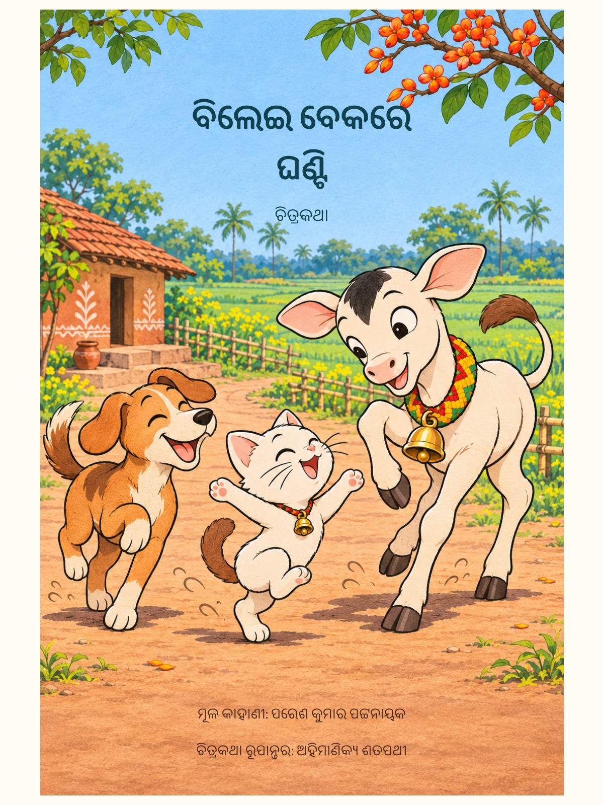

ବିଲେଇ ବେକରେ ଘଣ୍ଟି
କୁନି ବିଲେଇ ଘଣ୍ଟି ପିନ୍ଧି ଖୁସିରେ ନାଚେ। କିନ୍ତୁ ସମସ୍ତେ ତାହାର ଖୁସିକୁ ବୁଝନ୍ତି ନାହିଁ। ସାଙ୍ଗମାନେ କିପରି ତାହାର ପାଖରେ ଠିଆ ହେବେ?
ମୂଳ କାହାଣୀ: ପରେଶ କୁମାର ପଟ୍ଟନାୟକ
ଚିତ୍ରକଥା ରୂପାନ୍ତର: ଅହିମାଣିକ୍ୟ ଶତପଥୀ
ଚିତ୍ର ପରିକଳ୍ପନା ଓ ପୁସ୍ତକ ସଜ୍ଜା: ଅହିମାଣିକ୍ୟ ଶତପଥୀ
୫୬ଟି ଚିତ୍ରଦୃଶ୍ୟ · ୬୦ଟି ଭିତର ପୃଷ୍ଠା · ଆଗ ଓ ପଛ ମଲାଟ
ଏହି ପ୍ରତିଟି ପଢ଼ିବା ପାଇଁ। ଛାପା ପାଇଁ ଚିତ୍ରର ବିଭେଦନ ବଢ଼ାଇବା କାମ ବାକି ଅଛି।